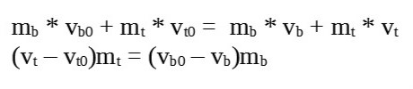
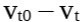
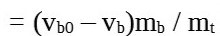

Collisions (ohysics) for Missiles, Bullets, Explosions etc
Elendil
I struggle how to create collisions for bullets, missiles and all moving objects from shooting weapons.
I take into consideration Bullet (engine) for that, but I am not sure if isn’t take too much performance.
I thinking about, do it with raycast, but I don’t know how to raycast for objects like spheres or objects with custom shapes, because raycast is only 1dimensional line (ray from start point in to end point) and I need something like area damage for explosions. Imagine, when grenade explode near 4enemies, it affect all 4 enemies within explosion range.
You may also look into PhysicsWorld::SphereCast(result, ray, radius, maxDistance), PhysicsWorld::GetRigidBodies(result, sphere) or similar functions.
In some cases you may want to use triggers instead. These rigid bodies - that had SetTrigger(true) called - will signal physics events without any forces being applied as a result.
Elendil
Thanks.
One thing, what if bullet is going too fast? I turn ContinousPhysic Detection (I can’t remember the right name) and fast moving camera isn’t going throught objects anymore.
But from documentation, is mentioned it can slow down performance. Imagine I want have machine gun which shoot lot of bullets in high speed. Is it ok to make bullets with Bullets physic engine? Or raycast is better solution?
Maybe for player character it is not cost performance, but imagine if they will be enemies with machine guns too.
Modanung
Ironically you’re probably better off by indeed casting a ray (or several consecutive ones).
Elendil
Ok.
My idea is create object (simple bullet maybe billboard with bullet texture) and it will be casting ray for object detection as he travel in scene. It is good idea? Only problem is, if he will moving fast, but I have some ideas how to make it correct. Or it is better only cast ray and make damge for first ray hit? But this is unrealistic when objects will be in different distance.
Dave82
You can use raycast with a bullet velocity as the ray length. Perform raycast between bulletPos and bulletPos + bulletVelocity if no hits were registered you’re safe to move your bulletPos to bulletPos + velocity.
keep repeating this process until you hit something or your bullet reach max distance (goes out of level bounds).
SirNate0
You’d actually want to ray cast with bullet velocity * time since last frame or it will overshoot. If they’re slow bullets you could also segment it to trace an approximately parabolic arc from gravity (but of course that would be somewhat more expensive).
smellymumbler
Just so you know: In my game, bullets are affected by gravity and there’s penetration logic. Instead of using a rigid body, I just cast rays all the time. Much less buggy.
Elendil
Thanks all for posts. Solution like use bullet velocity and time for the ray distance was what come to my mind when I started thinking about it. But thanks to confirm the idea.
I did bullets with raycast system, which do damage to object. I am going try something with area damage.
how did you calculate the impact of the bullets
if we used raycast for bullets, how do we calculate the impact and apply the force on the hit object?
smellymumbler
Well, that depends on your game. In my game, impact and force and directly dependent on the character’s attributes + dice roll. It’s not meant to be realistic. So, the distance traveled by the bullet is the only thing that matters to me, since I used it to roll some dices versus the characters luck, perception, etc. I could add other interesting variables, like wind and so, but again, not trying to be realistic.
i didnt go to school, so i have not much knowledge in math or physics.
the only thing im thinking about (now) is how to calculate the impact of hits.
e.g. when shooting a small independent rock on the ground, how should it react to the hit
Virgo
my current idea is to make every bullet a physical object, but with different collision mask from game world, make them not to collide with game objects. then subscribe to E_PHYSICSPOSTSTEP, raycast from last frame’s position to current position to determine hit targets. but i stuck right here: i totally have no idea how to implement the logics here
Leith
My character class is derived from LogicComponent.
This gives me FixedUpdate method which I can override, it is called after the physics update.
I would recommend using raycasts to simulate bullets, don’t try to make 3D physics bullet objects which are very small, and send them at very high velocities, it will lead to trouble.
Bullet Physics works best with objects no smaller than a tennis ball, and no larger than a bus.
We can “fake” a physics bullet in a single frame, using a raycast.
We don’t need to draw that bullet, though we may wish to draw the damage it did when it hits something. Usually, we don’t try to draw bullets, because they are assumed to be moving so fast that we can’t really see them. We can use things like trail effects to draw them if we really feel like it.
[EDIT] You are correct in thinking that CCD will help with the case of fast-moving objects, but it’s not cheap, and there are still going to be numerical issues with using very small objects.
I needed to use CCD to prevent tunneling in a watermelon racing game, and that melon was 1x1.6 METERS in size, and moving at around 120KPH
Virgo
the reason i make bullets real physics objects is the Bullet physics engine will do the gravity effect, and also make it simpler to do wind effect (just some Body::ApplyForce())
and the bullet can still be seen within the game world, tho its quite hard :v
Leith
The longer you spend making games, the more limitations you will encounter. The real magic is not to try to solve every problem, but to find an acceptable workaround, which does what you want, and then find a way to make it look pretty. First make it work, then worry about what it looks like. In your case, my suggestion to use raycasts will let you get the code working quickly, even though you can’t see any damage being done, you will be able to detect the hits and deal the damage and make it work. Once it works, you can make decisions about how that should look, and run into the next bottleneck / limitation.
As for learning math, man I have a degree and I still can’t read greek notation - I’d love to teach you what I can, as you find you need it, so don’t hesitate to ask - most game math boils down to dot and cross products, interpolation, and a bit of trigonometry - it can be learned on demand, as you find you need it
Virgo
i mean bullets are made physical objects just to simulate their movement, and use raycast to detect hit targets.
and the problem here is i dont know how to apply “reaction” to the hit targets
Leith
Well I did suggest that how things look should come last, but you could for example, just change the material colour of a dead guy, just to display that something got hit, and i would also look at the Decal sample, which lets you shoot splats on the world
Bullet won’t do ALL the math for you, at some point you’re gonna need to get to grips with some math, I know it sucks, but if you can use it for something cool, it sucks less.
When I am writing something new, I often just spew some text to the console output, like “oh I got hit”
Debug Spew is underrated.
Virgo
oops, im talking about the reaction of the impact
like shooting a small rock, the rock will “be pushed away”
im thinking of using RigidBody::ApplyForce() to make the reaction, just have no idea how to calculate the force for it
sry if my expression makes you confused, im not good at language either
Leith
for ApplyForce, you need to pass in a 3D Vector - you definitely need to learn about vectors. They are imaginary arrows in space, that have a direction, and a magnitude. ApplyForce needs a Vector with direction and magnitude. Magnitude can be thought of as length, but it can also be thought of as force. Vectors are easier to learn about in 2D at first, but the ideas and maths all works in 3D as well, and is central to game programming. Nothing worth doing is easy, I am here to help you if you need help to understand the maths for games - you don’t need to become a math whiz, but you need certain math tools in your toolkit.
When hiring in my previous company, my first question was always “Give me an example of how a Dot Product can be used in 2D or 3D games.” The reason that I ask this, is because when I started out, I had no maths either, and I had no answer to that question. There are lots of correct answers, but I had no idea, so this gave me an indication about how experienced the programmer was in terms of game development.
Virgo
i have been messing with google on this calculation these days, and almost every equation i found related to forces involves acceleration factor, but since in my case the “collision” is determined by a Raycast(), so there is no acceleration at all.
the only values i have are the mass of both collision objects (the bullet and the hit target) and the velocity of the bullet, i cant really “fabricate” a force for the hit target.
i dropped out too early, the only force i learned at school is gravity
edit: i think the force F=ma may not be the force i want at all
Leith
Don’t worry about it too much - ok so lets say we have a direction vector, coming from some point of origin in the world - now we scale it up, we give it magnitude, and we TWEAK the numbers until we like the result - this is perfectly ok. Don’t get too caught up on the formulas, just worry about getting the result you want - true understanding comes in small steps, you don’t need to know everything to get results, and there are a LOT of people working in the game industry fulltime who have NO IDEA what they are doing, but still manage to keep their jobs.
F=ma is exactly what you want, I suspect you’re worried about acceleration. It is a magnitude. Mass is a scalar. A scalar is just a multiplier value. We multiply them together to get the force. You could replace them both with a single Force value and ignore the formula, and it will still work - so force gives you what? just another scalar, to be applied to a unit-length direction vector.
I don’t expect you to really understand, but I hope you get the feeling that you can just play with the values and get a result you like. This is the basic stuff for games. At the other end, we have all hell breaking loose, with things like eigenvectors, hamiltonians, and other strangely named beasts. Most of that stuff is not immediately relevant to making games, and you may never need it, but there is definitely a basic level of maths needed, and we can certainly concentrate on just what we need, when we need it.
Virgo
are you suggesting i should just apply some random forces to the hit targets? (I apologize to my english teacher )
but i want the bullet part to be realistic
ignore other factors
lets say the hit target stops the bullet (so that means the target takes all the kinetic energy that bullet had, right?)
and cuz
we get new energy applying to the target
E_new
= 1 / 2 * m_target * v_new * v_new
= 1 / 2 * m_bullet * v_bullet * v_bullet
and so we can get
v_new
= std::sqrt(m_bullet * v_bullet * v_bullet / m_target)
can i do that? pardon my ignorance and imagination xD
Leith
You’re doing too much thinking - I understand that you want to calculate a ballistic trajectory, the math is not this complex given some “known values” such as the mass of the bullet, its direction and its exit velocity
Virgo
i just wanted a parameter for target::ApplyForce()
make its movement react to the hit…
Modanung
For bullet impacts I’d use this RigidBody method:
/// Apply impulse at local position.
void ApplyImpulse(const Vector3& impulse, const Vector3& position);
Virgo
and what value should i pass to this ApplyImpulse()?
Modanung
F = m * a
Force (in Newton) equals mass (in kg) times acceleration (in m/s).
This can both be used to calculate a realistic impulse from the bullet and a rewarding impulse on the target. Experimentation also gets you pretty far. Just try out some numbers from the mundane to the insane.
Leith
Impulses work differently to forces - they do not account for Time, they happen “instantaneously”.
An impulse is defined as an instantaneous change of velocity.
Forces are more generally more accurate.
Bullet uses impulses to correct object penetrations, which is a kind of math cheat.
In the physical world, forces are almost never applied instantly.
Leith
When a tennis ball hits a wall, it deforms, it absorbs energy, it then acts as a muscle, and returns that stored energy, and this all takes time.
Virgo
its going more and more complicated for me
Leith
Let’s start with some basics like vector math, and work our way up
Leith
Your first thing to learn is the difference between a vector, generally, and a unit vector - what is a unit vector, why is it special.
Modanung
Don’t go slapping him with complex quantomic dot productometry: You’ll scare him to math!
Virgo
i guess a unit vector is a vector which length is exactly one unit… it* can be used to indicate direction
Modanung
You are a quick learner.
Virgo
i spent days on this thing before
Modanung
Rest assured, there’s enough knowledge to spend an entire life on.
Leith
There is more to this idea of a unit vector - let’s drop back to 2D, and imagine a circle, whose radius is length of ONE - any point on the circle, defines a ray of unit length - we can start to think in terms of angles between two vectors, and this also works in 3D - the way we think about vectors, determines how well we can apply them in games.
Leith
Back in 2D circle land, we can talk about sine and cosine, which give us power over triangles, a concept I could best explain with a picture, but all triangles are just made from two vectors - even 3d triangles
Virgo
angles, are they like (Vector2- Vector1).Normalized() ?
Leith
there are a few ways we can measure angles between vectors, the most common is called arc cosine, or acos - but it can’t tell us about the direction of the angle, just how big the angle is
Leith
the more you get into game dev, the more there is to learn, its pretty cool, just the basics will get you by, but theres always more
Leith
Let’s talk about Normalized for a moment - what does that do to a vector?
Virgo
i lost my efficency learning new stuff, so normally i just ask for pseudo code to a solution.
Leith
It throws away the Magnitude, and forces the vector to have a length of 1, so now its just a direction
Leith
This is a useful thing, but often abused, all it does, is turn any vector, into a direction vector
Leith
It’s worth looking into HOW normalizing works, because normalizing crops up in a few places other than just basic vector math, and its meaning is the same
cool man, we’ll pick this up later, I’ll like you to try to explain what normalizing is and how it works given you can see the code. It’s basic stuff for me, and I’m pretty laid back and happy to share my brain, lots of people have contributed to my learning experience, I want to pay it forward.
Leith
I really have to say, what a pile of shit, that sourcecode is, before I even begin to explain how it really works - I hate API that hide math behind constructs like that - no mention of a dot product
float lenSquared = LengthSquared();
That hideous looking thing, is really, float lenSquared = dot (this vector, and also this vector);
One thing we do learn on the way, is that the dot product of a vector with itself, is its squared length, which we can only learn, by learning how the math works.
Modanung
Wrapping reused code in a function is common practice in object oriented programming.
Indeed this does not conserve mathematical elegance.
Leith
I use oop as I see fit, I am starting to mix pure c with urho, because I am lazy, and because I am lazy like a fox
off topic police will be here any moment
Leith
game development is not my passion, its my calling, I trained for this with robots spitting hot metal at me, getting the decimal point in the wrong place in one line of code caused the 30 foot long monster to try to tear itself apart, it was not acceptable to make mistakes
Modanung
Yet oh so tempting.
Leith
ok so sometimes, I would stall the motor, and warm up my lunch on it
Leith
robots have a sense of humour, and put up with a lot of shit, except putting the decimal point in the wrong place, this is the cardinal sin - I coded up to seven axes, which is just like a bone hierarchy in a game
Leith
its really hard man, to code for many axes, when theres hammers smashing everywhere around you - and not make any mistakes, no errors, no floating point issues, no dot in the wrong spot
Modanung
I was pondering earlier today how a proper AI might only be able to laugh uncontrollably (mainly at us) after it took in enough information.
Leith
I wish I could show you my work on gpu nnai for games, it scared the shit out of me
Leith
we’re wayyy off topic, take it to pm
Modanung
Virgo
lets back to this very basic question, should we?
Modanung
Elaborating on my earlier post:
So you could multiply the mass of the bullet by it’s speed and apply that force to the target hit. That would be somewhat realistic. But you may want to increase the force and throw realism out the window, like they do in Hollywood, making a single bullet throw a person through the air.
Leith
ok so we have a ray, it has a direction, and theoretically infinite length, but for the purposes of working out the force, we have direction, mass, and force, where force is, in terms of guns, related to the exit velocity - we can compute the force that left the gun, apply drag and friction and any other slowdowns, and at the end of its travel, when it hits the target, we can make some assumptions, based on what we think we know about physics - its a game, we get to play with the input values, and make them plausible in our game - wait thats wrong, we need to make the OUTCOME plausible, and how we did it, what math cheats we took, are not relevant to the user
Leith
the magic in the magic show, is not in the hand or hat of the magician, its in his assistants underwear, its mostly slight of hand, doing the actual math is too slow, so we find ways to approximate it and get it done, getting shit done is the word of mouth way the game industry works, if you can get shit done, you get a job, and if you cant, you get the sack, its not a perfect world - but you can learn real magic from people around you, and apply it
Virgo
but the mass times speed wont equal force at all
Leith
assuming the bullet is moving in a perfect vacuum, the force will be speed times mass, a basic newtonian physics constant, which I think personally is bullshit, because nothing is perfect, and the universe (mostly) sucks
In a few weeks, I am going back to school, to get a teaching certificate
Newton was very bright, but he did not define our physical world, he merely attempted to define it using the state of the art math he had back then.
Virgo
i think i can trust you guys in this one…
now lets talk about explosions, can i do a great number of RaycastSingle()s from the explosion origin to all different directions with the length being its effective diameter, instead of doing a SphereCast()?
and i wonder if this can be possibly done in 1/60 second?
cuz if i do a SphereCast() to find out the targets being affected by the explosion, i cant think of a way to determine if those targets are behind covers or not
Leith
Just, no. you can do a few ray casts, but a shitload of raycasts costs a shitload. Your app will have a heart attack and you’ll feel foolish for trying to do a death star explosion with a physics engine.
In physics you get what you paid for, which is why in games, we try to avoid paying full cost
By the way, the original death star explosion in star wars took months, using supercomputers of their era
Virgo
then any suggestions for determining if a target is behind cover or not? if im to use SphereCast()?
jmiller
Hi,
Modanung
Ah, but it is not mass times speed: It’s mass times acceleration; a change in speed… and let’s assume the bullet instantly comes to a full stop upon impact.
This also means that when no forces (like gravity, drag or collisions) are applied to an object it will continue at the same velocity (linear and angular), in the same direction. Like an asteroid in deep space.
You could use a spherecast to find the objects that you would then each check with one or several raycasts for possible escaping of the blast.
Virgo
this raycasts here is the new question, how to do them?
i mean how do i determine the parameters for the raycasts
I3DB
Go over some of the examples that use raycasts.
Modanung
Sample using Octree raycast:
Similarly you can use these PhysicsWorld functions:
Virgo
update: about the “force” to apply on the hit target to simulate the reaction of the bullet impact, i accidently found this momentum and its conservation principle, so there is
(subscript b means bullet, t means target)

and so the change of target’s velocity  
and becuz the mass of both objects and the initial velocity of the bullet when impact are known, the change of bullet’s velocity are determined by game logics, is solvable.
So 10 times the camera direction. It’s quite a powerful bullet. Spins a ragdoll right around and off it’s feet.
And another example:
hitRigidBody.ApplyTorqueImpulse(Vector3.Up * 4);
Leith
I would add some mention of Collision Filtering - ie, Collision Group and Collision Mask (the latter is called collision layers in Urho)
Virgo
the real question there is not if the hit targets are correctly collided or not,
but whether there are obstacles between these targets and the explosion center or not.
Leith
You want to determine which object was hit first - a ray cast starts at its origin, and in theory, moves forwards, and you can return the first object that was hit, and determine if it was a wall, or not. Filtering is useful to ignore collisions with things you don’t want included in the result, such as trigger (aka sensor) volumes
Virgo
im not talking about excluding walls or other non-player related game objects
im talking about how to check if any of the results are actually behind covers
Leith
Ray casts only return the first thing that the ray hit - in your case, you will either be told that the ray hit a wall, or it hit a game character, so we can deduce, hey, if my bullet hit the wall, then the character was not hit.
Virgo
i think you mistook Raycast() with RaycastSingle()
and Modunung’s reply you replied to had changed topic from bullet detection to explosion detection
Leith
Raycast is a general term, I was using it in a general sense. Yes, you want to use RaycastSingle, so you get the closest hit result, you’re not interested in raycasting for multiple objects. I apologize for the confusion.
Virgo
i think you are actually even more confused
so sad i cant draw, or i will draw some to explain what im really talking about
Leith
You want the closest result - if you use Raycast, you’ll need to find which result is closest - RaycastSingle returns the closest result - I’m not confused about that I’ve used many engines, and I’ve used Bullet in my own engines, I’m pretty clear about you wanting the closest hit result, not every hit. Spherecasting is where we tend to want multiple results, but if we wanted to fire a laser beam, we might want to know about all the hit objects.
Virgo
i think i have finished the topic on bullet detection…
and have moved to that of explosion…
Leith
Excellent
This is pretty easy, and also relates to your previous questions.
Step one is to use a sphere test to collect all the objects (ie rigid bodies) within range of the explosion.
Step two is to apply a Force to each collected object.
The force should have a direction based on the position of the explosion and the position of the object.
And its magnitude should be related to the distance from the position of explosion to each target object. We’re using vectors with magnitude.
Typically, the force should be falling off as the square of the distance, which is how energy tends to dissipate in classical physics models, but you can use another attenuation method, including inventing your own, we just want to apply less force if the target object is further away.
Virgo
and the hard one is how to detect if any target is actually behind a cover or not…
Leith
ok, let me add a step.
Step one - collect list of objects inside a sphere
Step two - perform raycasts to eliminate objects that are behind cover
Step three - apply explosion forces to remaining objects in our list
Virgo
and the approach to step two is my concern
Leith
ok, you’re missing some basic vector3 maths skills as I mentioned previously.
The vector Direction from Source to Target, is (Target.position - Source.Position).Normalized
The magnitude (or length) of that vector, is square root of ( Target.position.Dot (Source.Position))
We can calculate that using (Target.position - Source.Position).Length( ), gee isnt it nice that Urho provides us with some shortcuts, for things like that.
We could also use other methods to compute length, such as Pythagorus Theorem, but I’m going off topic, that should be enough information for your problem.
Virgo
uh uh…
im talking about this step two
i think we have some serious issues communicating
Leith
For each possible target we collected in our sphere, we perform a raycast, from origin of explosion, to candidate object position… to do that, we need to know the direction and length of the vector that begins at the origin of explosion, and ends at the target.
If we hit a wall, then this guy is safe from the explosion, and can be removed from the list of candidates.
But if we have a direct line of sight to the target, we apply the explosion force.
Virgo
but in games targets are not single points, they have shapes… shouldnt be determined with a single raycast
edit: Modanung talked about doing multiple raycasts, but when i asked how to determine parameters for those raycasts, he disappeared
Leith
In games, we cheat, often, to provide believable and plausible results, we don’t test down to the last atom - we could provide more than one raycast, with a small amount of additional randomness, which gives us a “kernel” test result that is much more believable, but still only an approximation of the real world physics. Physics itself is an approximation of real physics, we have to accept the runtime limitations of our technology, we don’t have quantum computers yet.
Virgo
i know im “doing too much thinking”, but im just pursuing the most realistic results that can be possibly achieved with the help from every person & everything i can make use of.
but the further i dive into, the more frustration i get from it?
(i feel really sick about my english expression)
and yes, maybe just some random extra raycasts for now, due to the lack of knowledge and computing power, sad one.
Leith
ok so lets say we did 12 ray tests per object, with some randomness to move the direction a little bit - now we apply 1/12 of the explosion force, for each time we hit the target - now force is being distributed more accurately, and the character standing behind a low wall will receive more force where they are exposed to it
Leith
I used the example of 12, but we cant use infinity number of tests, we need our app to actually run at good frame rates too
Virgo
i started thinking about how other games achieve this, or is that to say, those production ready game engines out there have provided ready-made solution for explosion detection? am i suffering all these just becuz Urho3D is not mature enough?
Leith
All games have the same limitations, and tend toward similar solutions for certain problems, though there is always the possibility of shortcuts in complex math!
Urho is just as mature as Unity or any other engine I have worked with, though I don’t like the scene editor tool, and the asset import pipeline could be improved, the actual engine is not horrible.
I complained once to Erwin (author of Bullet, and Blender) that his physics engine cheats when it comes to the inertia tensor - which is computed incorrectly, and stored as a simple vector3 instead of a more accurate 3x3 matrix. He countered with “yeah, but it works, it looks ok. And it’s a lot cheaper.”
Bullet is good enough for Disney, so it’s good enough for me, I am not NASA. There is some talk of implementing the Newton physics engine for Urho, but for me personally, I think it’s a mistake - we don’t need super accuracy, we need to also worry about how slow our code is, when making games.
Leith
Let’s just say, if I found that 8 out of 12 test rays hit my target, I would not apply force 8 times, I would average the directions and magnitudes, and apply it once.
Virgo
i will work on the “randomness” in your proposition later, my brain cant handle too much now,
btw we just “spammed” 98 replies in 2 days that is, we struck the owner of this thread with 98 notifications…
Leith
I doubt the owner will be too annoyed, as long as something good resulted from it.
Modanung
Something called sleep.
I didn’t mean using random numbers for the forces. I meant developing a feeling for the correct number, by trying out different ones.
QBkGames
Being on the topic of physics, does anyone know how to find the velocity of an object at the time of impact??? For example, if I drop an object, I want to be able to give it damage proportional to the speed it has when it hits the ground.
I’ve tried getting the RigidBody::GetLinearVelocity() in the NodeCollisionStart start event, but I seem to be getting the rebound speed rather than the impact speed (Y component being mostly small and positive, when it should be large and negative, when you drop something from high up).
I’ve searched the Internet quiet a bit and still could not find a solution.
Modanung
@QBkGames What you’re looking for is the impulse of the appropriate contact within the event data. The character demo shows how to reach it.
GodMan
What is the best method for a rocket explosion? I’m using physics for the rocket instead of raycasting, because it is a slow moving projectile.
smellymumbler
The Q3 codebase is pure gold for simplistic projectile physics:
Leith
Rocket explosions are similar to hand-grenade or bomb explosions, except that the explosive force is stronger in a particular direction. I would suggest using dot product to compare the direction from explosion source to target, to the direction of the missile, and if the result of the dot test is positive, use the dot value to scale the explosive force applied to the target. If negative, pretend its a hand grenade. This technique allows us to warp the sphere of explosive force in the direction we desire, by the amount we wish. I know, my explanation was not completely clear, or complete, but it should give you the tools you need to produce a satisfactory result.
Dot products are perhaps the most useful thing we will ever learn about game programming - more useful, in more places, than anything else I can think of, except for Normalize.


 i didnt go to school, so i have not much knowledge in math or physics.
i didnt go to school, so i have not much knowledge in math or physics.


 )
)


 then any suggestions for determining if a target is behind cover or not? if im to use
then any suggestions for determining if a target is behind cover or not? if im to use 
 i just want the codes to generate the impact automatically so i dont need to provide a random number every time
i just want the codes to generate the impact automatically so i dont need to provide a random number every time